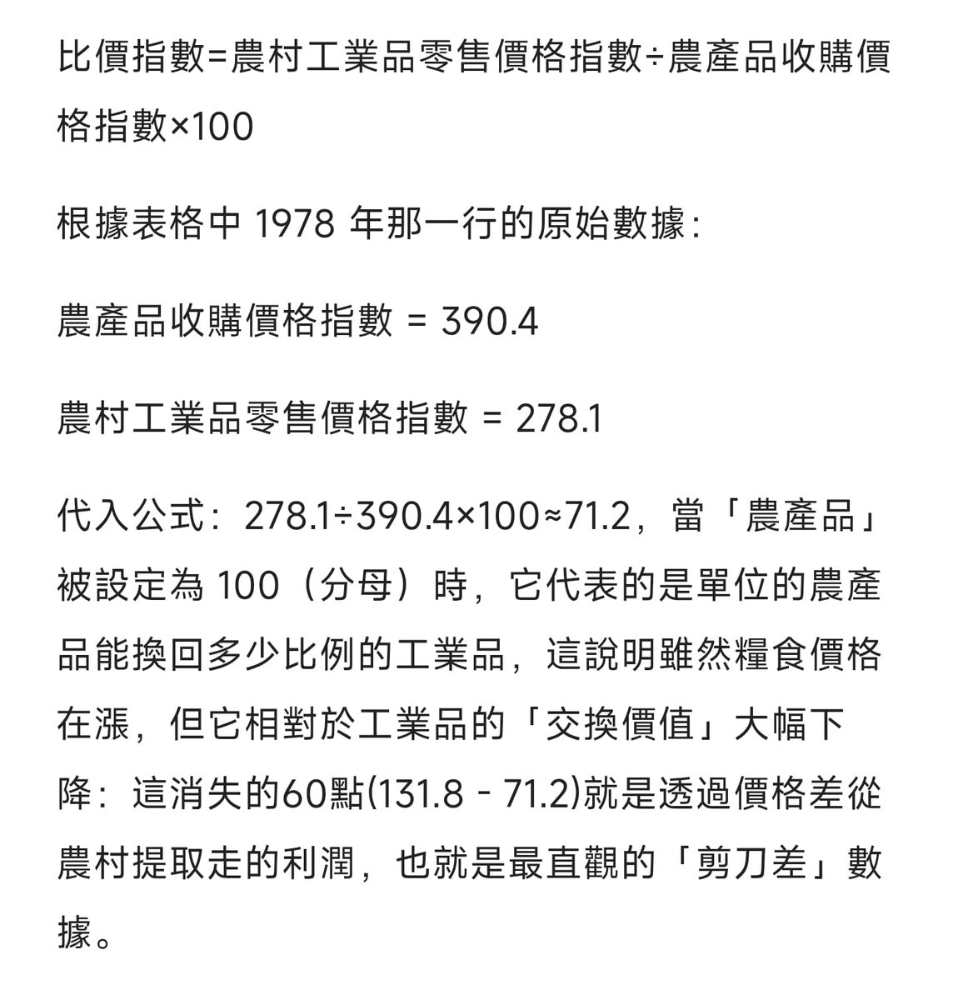
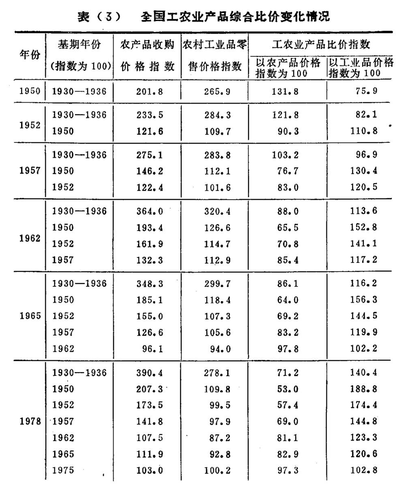

所以呢？😹
你壓根就沒有辦法證明「沒有剪刀差」：還是看倒數第二列，1950年和1978年，以1930-1936爲基期，其「以農產品價格指數為100」的比價指數分別是131.8和71.2
這說明1950年，100單位的農產品能換回131.8單位的工業品。而到1978 年，同樣100單位的農產品只能換回71.2單位的工業品了😁

你壓根就沒有辦法證明「沒有剪刀差」：還是看倒數第二列，1950年和1978年，以1930-1936爲基期，其「以農產品價格指數為100」的比價指數分別是131.8和71.2
這說明1950年，100單位的農產品能換回131.8單位的工業品。而到1978 年，同樣100單位的農產品只能換回71.2單位的工業品了😁


重新用你能看懂的语言解释一下吧：
右侧的价格指数都是把当年价格指数定为100
278.1/390.4=71.2%：到了1978年，农民只需要卖出相当于过去 71.2% 的农产品，就能换回过去同等数量的工业品。
390.4/278.1=140.4%： 到了1978年，工人需要卖出相当于过去 140.4% 的工业品，才能换回过去同等数量的农产品。 https://t.co/X6f52nACFp https://t.co/izV8BzTvTU
右侧的价格指数都是把当年价格指数定为100
278.1/390.4=71.2%：到了1978年，农民只需要卖出相当于过去 71.2% 的农产品，就能换回过去同等数量的工业品。
390.4/278.1=140.4%： 到了1978年，工人需要卖出相当于过去 140.4% 的工业品，才能换回过去同等数量的农产品。 https://t.co/X6f52nACFp https://t.co/izV8BzTvTU